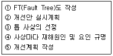
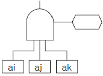
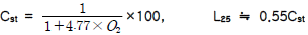
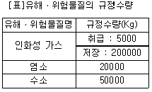
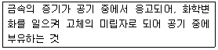
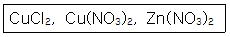
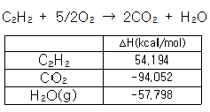
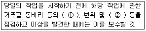
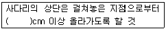

산업안전기사 (2011-03-20 기출문제)
1과목: 안전관리론
1. 인간의 행동에 관한 레윈(Lewin)의 식, B = f( PㆍE )에 관한 설명으로 옳은 것은?
- 인간의 개성(P)에는 연령과 지능이 포함되지 않는다.
- 인간의 행동(B)은 개인의 능력과 관련이 있으며, 환경과는 무관하다.
- 인간의 행동(B)은 개인의 자질과 심리학적 환경과의 상호 함수관계에 있다.
- B는 행동, P는 개성, E는 기술을 의미하며 행동은 능력을 기반으로 하는 개성에 따라 나타나는 함수 관계이다.
(정답률: 77%)

2. 다음 중 부주의의 현상으로 볼 수 없는 것은?
- 의식의 단절
- 의식수준 지속
- 의식의 과잉
- 의식의 우회
(정답률: 85%)
3. 다음 중 통계에 의한 재해원인 분석방법으로 볼 수 없는 것은?
- 파레토도
- 위험분포도
- 특성요인도
- 크로스분석
(정답률: 57%)
4. A 사업장에서 58건의 경상해가 발생하였다면 하인리히의 재해구성비율을 적용할 때 이 사업장의 재해구성 비율을 올바르게 나열한 것은? (단, 구성은 중상해 : 경상해 : 무상해 순서이다.)
- 2 : 58 : 600
- 3 : 58 : 660
- 6 : 58 : 330
- 10 : 58 : 600
(정답률: 88%)
5. 안전조직 중 직계-참모(line-staff)형 조직에 관한 설명으로 옳은 것은?
- 안전스탭은 안전에 관한 기획ㆍ입안ㆍ조사ㆍ검토 및 연구를 행한다.
- 500인 미만의 중규모 사업장에 적합하다.
- 명령과 보고가 상하관계뿐이므로 간단명료하다.
- 생산부문은 안전에 대한 책임과 권한이 없다.
(정답률: 72%)
6. 재해발생시 조치순서 중 재해조사 단계에서 실시하는 내용으로 옳은 것은?
- 현장보존
- 관계자에게 통보
- 잠재위험요인의 색출
- 피해자의 응급조치
(정답률: 72%)
7. 다음 중 일반적인 기억의 과정으로 올바르게 나타낸 것은?
- 기명 → 파지 → 재생 → 재인
- 파지 → 기명 → 재생 → 재인
- 재인 → 재생 → 기명 → 파지
- 재인 → 기명 → 재생 → 파지
(정답률: 54%)
8. 산업안전보건법에 따라 안전관리자를 정수 이상으로 증원하거나 교체하여 임명할 것을 명할 수 있는 경우가 아닌 것은?(관련 규정 개정전 문제로 여기서는 기존 정답인 4번을 누르면 정답 처리됩니다. 자세한 내용은 해설을 참고하세요.)
- 중대재해가 연간 5건 발생한 경우
- 안전관리자가 질병으로 인하여 3개월 동안 직무를 수행할 수 없게 된 경우
- 안전관리자가 질병 외의 사유로 인하여 6개월 동안 직무를 수행할 수 없게 된 경우
- 해당 사업장의 연간재해율이 전체 평균재해율 이상인 경우
(정답률: 78%)
9. 다음 중 위험예지훈련에 있어 브레인스토밍법의 원칙으로 적절하지 않는 것은?
- 무엇이든 좋으니 많이 발언 한다.
- 지정된 사람에 한하여 발언의 기회가 부여된다.
- 타인의 의견을 수정하거나 덧붙여서 말하여도 좋다.
- 타인의 의견에 대하여 좋고 나쁨을 비평하지 않는다.
(정답률: 88%)
10. 다음 중 안전점검의 목적으로 볼 수 없는 것은?
- 사고원인을 찾아 재해를 미연에 방지하기 위함이다.
- 작업자의 잘못된 부분을 점검하여 책임을 부여하기 위함이다.
- 재해의 재발을 방지하여 사전대책을 세우기 위함이다
- 현장의 불안전 요인을 찾아 계획에 적절히 반영시키기 위함이다.
(정답률: 89%)
11. 산업안전보건법상 사업 내 안전ㆍ보건교육 중 근로자 정기안전ㆍ보건교육의 내용이 아닌 것은?
- 산업안전 및 사고예방에 관한 사항
- 산업보건 및 직업병예방에 관한 사항
- 유해ㆍ위험 작업환경 관리에 관한 사항
- 작업공정의 유해ㆍ위험과 재해 예방대책에 관한사항
(정답률: 62%)
12. 참가자 다수인 경우에 전원을 토의에 참가시키기 위한 방법으로 소집단을 구성하여 회의를 진행 시키는데 일명 6-6회의라고도 하는 것은?
- Symposium
- Buzz session
- Forum
- Panel discussion
(정답률: 87%)
13. 1000명의 근로자가 근무하는 금속제품 제조업체에서 연간 100건의 재해가 발생하였다. 이 가운데 근로자들이 질병, 기타 사유로 인하여 총근로시간 중 3%가 결근하였다면 이 업체의 도수율은 약 얼마인가? (단, 근로자는 주당 48시간, 연간 50주를 근무하였다)
- 31.67
- 32.96
- 41.67
- 42.96
(정답률: 53%)
14. 주로 관리감독자를 교육대상자로 하며 직무에 관한 지식, 작업을 가르치는 능력, 작업방법을 개선하는 기능 등을 교육 내용으로 하는 기업 내 정형교육의 종류는?
- TWI(Training Within Industry)
- MTP(Management Training Program)
- ATT(American Telephone Telegram)
- ATP(Administration Training Program)
(정답률: 84%)
15. 다음 중 무재해운동 추진의 3요소에 관한 설명과 가장 거리가 먼 것은?
- 모든 재해는 잠재요인을 사전에 발견ㆍ파악ㆍ해결함으로써 근원적으로 산업재해를 없애야 한다.
- 안전보건은 최고경영자의 무재해 및 무질병에 대한 확고한 경영자세로 시작된다.
- 안전보건을 추진하는 데에는 관리감독자들의 생산 활동 속에 안전보건을 실천하는 것이 중요하다.
- 안전보건은 각자 자신의 문제이며, 동시에 동료의 문제로서 직장의 팀 멤버와 협동 노력하여 자주적으로 추진하는 것이 필요하다.
(정답률: 65%)
16. 다음 중 학습정도(Level of learning)의 4단계를 순서대로 옳게 나열한 것은?
- 이해 - 적용 - 인지 - 지각
- 인지 - 지각 - 이해 - 적용
- 지각 - 인지 - 적용 - 이해
- 적용 - 인지 - 지각 - 이해
(정답률: 75%)
17. 다음 중 바이오리듬(생체리듬)에 관한 설명으로 틀린 것은?
- 안정기(+)와 불안정기(-)의 교차점을 위험일이라 한다.
- 육체적 리듬은 신체적 컨디션의 율동적 발현, 즉 식욕, 활동력 등과 밀접한 관계를 갖는다.
- 지성적 리듬은 "I"로 표시하며 사고력과 관련이 있다.
- 감성적 리듬을 33일을 주기로 반복하며, 주의력, 예감 등과 관련되어 있다.
(정답률: 70%)
18. 다음 중 착오 요인과 가장 관계가 먼 것은?
- 동기부여의 부족
- 정보 부족
- 정서적 불안정
- 자기합리화
(정답률: 56%)
19. AE형 또는 ABE형 안전모에 있어 내전압성이란 얼마 이하의 전압에 견디는 것을 말하는가?
- 750V
- 1000V
- 3000V
- 7000V
(정답률: 77%)
20. 다음 중 산업안전보건법상 안전ㆍ보건표지의 색채와 색도 기준이 잘못 연결된 것은?
- 빨간색 - 7.5R 4/14
- 노란색 - 5Y 8.5/12
- 파란색 - 2.5PB 4/10
- 흰색 - N0.5
(정답률: 82%)
2과목: 인간공학 및 시스템안전공학
21. 다음 중 예비위험분석(PHA)의 목적으로 가장 적절한 것은?
- 시스템의 구상단계에서 시스템 고유의 위험상태를 식별하여 예상되는 위험수준을 결정하기 위한 것이다.
- 시스템에서 사고위험성이 정해진 수준이하에 있는 것을 확인하기 위한 것이다.
- 시스템내의 사고의 발생을 허용레벨까지 줄이고 어떠한 안전상에 필요사항을 결정하기 위한 것이다.
- 시스템의 모든 사용단계에서 모든 작업에 사용되는 인원 및 설비 등에 관한 위험을 분석하기 위한 것이다.
(정답률: 79%)
22. 결함수분석(FTA)에 의한 재해사례의 연구 순서가 다음과 같을 때 올바른 순서대로 나열한 것은?

- ④ → ⑤ → ③ → ① → ②
- ② → ④ → ③ → ⑤ → ①
- ③ → ④ → ① → ⑤ → ②
- ⑤ → ③ → ② → ① → ④
(정답률: 76%)
23. 다음 중 절대적 식별 능력이 가장 좋은 감각 기관은?
- 시각
- 청각
- 촉각
- 후각
(정답률: 44%)
24. 인력 물자 취급 작업 중 발생되는 재해비중은 요통이 가장 많다. 특히 인양 작업시 발생빈도가 높은데 이러한 인양 작업시 요통재해 예방을 위하여 고려할 요소와 가장 거리가 먼 것은?
- 작업대상물 하중의 수직 위치
- 작업대상물의 인양 높이
- 인양 방법 및 빈도
- 크기, 모양 등 작업대상물의 특성
(정답률: 49%)
25. 소음원으로 부터의 거리와 음압수준은 역비례한다. 동일한 소음원에서 거리가 2배 증가하면 음압수준은 몇 dB정도 감소하는가?
- 2dB
- 3dB
- 6dB
- 9dB
(정답률: 49%)
26. 다음 중 최소 컷셋(Minimal cut sets)에 관한 설명으로 옳은 것은?
- 컷셋 중에 타 컷셋을 포함하고 있는 것을 배제하고 남은 컷셋들을 의미한다.
- 어느 고장이나 에러를 일으키지 않으면 재해가 일어나지 않는 시스템의 신뢰성이다.
- 기본사상이 일어났을 때 정상사상(Top event)을 일으키는 기본사상의 집합이다.
- 기본사상이 일어나지 않을 때 정상사상(Top event)이 일어나지 않는 기본사상의 집합이다.
(정답률: 52%)
27. 다음 중 중작업의 경우 작업대의 높이로 가장 적합한 것은?
- 허리 높이보다 0 ~ 10cm 정도 낮게
- 팔꿈치 높이보다 10 ~ 20cm 정도 높게
- 팔꿈치 높이보다 15 ~ 25cm 정도 낮게
- 어깨 높이보다 30 ~ 40cm 정도 높게
(정답률: 65%)
28. FT도에 사용되는 다음 게이트의 명칭은?

- 억제 게이트
- 부정 게이트
- 배타적 OR 게이트
- 우선적 AND 게이트
(정답률: 69%)
29. 인간공학 실험에서 측정변수가 다른 외적 변수에 영향을 받지 않도록 하는 요건을 의미하는 특성은?
- 적절성
- 무오염성
- 민감도
- 신뢰성
(정답률: 71%)
30. 다음 중 산업안전보건법상 유해ㆍ위험방지계획서를 제출하여야 하는 기계ㆍ기구 및 설비에 해당하지 않는 것은?(오류 신고가 접수된 문제입니다. 반드시 정답과 해설을 확인하시기 바랍니다.)
- 공기압축기
- 건조설비
- 화학설비
- 가스집합 용접장치
(정답률: 61%)
31. 다음 중 작업장 배치시 유의사항으로 적절하지 않은 것은?
- 작업의 흐름에 따라 기계를 배치한다.
- 비상시에 쉽게 대비할 수 있는 통로를 마련하고 사고 진압을 위한 활동통로가 반드시 마련되어야 한다.
- 공장내외는 안전한 통로를 두어야 하며, 통로는 선을 그어 작업장과 명확히 구별하도록 한다.
- 기계설비의 주위에 작업을 원활히 하기 위해 재료나 반제품을 충분히 놓아둔다.
(정답률: 83%)
32. 다음 중 반응시간이 제일 빠른 감각기능은?
- 청각
- 촉각
- 시각
- 미각
(정답률: 71%)
33. 다음 중 경고등의 설계 지침으로 가장 적절한 것은?
- 1초에 한 번씩 점멸시킨다.
- 일반 시야 범위 밖에 설치한다.
- 배경보다 2배 이상의 밝기를 사용한다.
- 일반적으로 2개 이상의 경고등을 사용한다.
(정답률: 64%)
34. 위험관리에서 위험의 분석 및 평가에 유의할 사항으로 적절하지 않은 것은?
- 발생의 빈도보다는 손실의 규모에 중점을 둔다.
- 한 가지의 사고가 여러 가지 손실을 수반하는지 확인한다.
- 기업 간의 의존도는 어느 정도인지 점검한다.
- 작업표준의 의미를 충분히 이해하고 있는지 점검한다.
(정답률: 44%)
35. 한 화학공장에는 24개의 공정제어회로가 있으며, 4000시간의 공정 가동 중 이 회로에는 14번의 고장이 발생하였고, 고장이 발생하였을 때마다 회로는 즉시 교체 되었다. 이 회로의 평균고장시간(MTTF)은 얼마인가?
- 6857시간
- 7571시간
- 8240시간
- 9800시간
(정답률: 58%)
36. A 공장의 한 설비는 평균수리율이 0.5/시간이고, 평균 고장율은 0.001/시간이다. 이 설비의 가동성은 얼마인가? (단, 평균수리율과 평균고장율은 지수분포를 따름)
- 0.698
- 0.798
- 0.898
- 0.998
(정답률: 48%)
37. 다음 중 인간이 과오를 범하기 쉬운 성격의 상황과 가장 거리가 먼 것은?
- 단독작업
- 공동작업
- 장시간 감시
- 다경로 의사결정
(정답률: 49%)
38. 다음 중 인간공학적 설계 대상에 해당되지 않는 것은?
- 물건(Objects)
- 기계(Machinery)
- 환경(Environment)
- 보전(Maintenance)
(정답률: 59%)
39. 다음 중 Fitts의 법칙에 관한 설명으로 옳은 것은?
- 표적이 크고 이동거리가 길수록 이동시간이 증가한다.
- 표적이 작고 이동거리가 길수록 이동시간이 증가한다.
- 표적이 크고 이동거리가 작을수록 이동시간이 증가한다.
- 표적이 작고 이동거리가 작을수록 이동시간이 증가한다.
(정답률: 71%)
40. 열압박 지수 중 실효 온도(effective temperature) 지수 개발시 고려한 인체에 미치는 열효과의 조건에 해당하지 않는 것은?
- 온도
- 습도
- 공기유동
- 복사열
(정답률: 51%)
3과목: 기계위험방지기술
41. 용접장치에 대한 설명 중 산업안전 기준에 맞는 것은?(오류 신고가 접수된 문제입니다. 반드시 정답과 해설을 확인하시기 바랍니다.)
- 아세틸렌 용접장치의 발생기실을 옥외에 설치한 때에는 그 개구부를 다른 건축물로부터 1m 이상 떨어지도록 하여야 한다.
- 가스집합장치로부터 3m 이내의 장소에서는 화기의 사용을 금지시킨다.
- 아세틸렌 발생기에서 10m 이내 또는 발생기실 4m이내의 장소에서는 흡연행위를 금지시킨다.
- 아세틸렌 용접장치를 사용하여 금속의 용접ㆍ용단 또는 가열작업을 하는 경우에는 게이지 압력이 127킬로 파스칼을 초과하는 압력의 아세틸렌을 발생시켜 사용해서는 아니 된다.
(정답률: 65%)
42. 동일한 재료를 사용하여 기계나 시설물을 설계할 때 하중의 종류에 따라 안전율의 선택값이 달라진다. 일반적으로 안전율의 선택값이 작은 것에서부터 큰 것의 순서로 옳게 된 것은?
- 정하중 < 반복하중 < 교번하중 < 충격하중
- 정하중 < 교번하중 < 반복하중 < 충격하중
- 교번하중 < 정하중 < 충격하중 < 반복하중
- 충격하중 < 반복하중 < 교번하중 < 정하중
(정답률: 51%)
43. 연삭기 작업 시 작업자가 안심하고 작업을 할 수 있는 상태는?
- 탁상용 연삭기에서 숫돌과 작업 받침대의 간격이 5mm이다.
- 덮개 재료의 인장강도는 224MPa이다.
- 작업 시작 전 1분 정도 시운전을 실시하여 해당 기계의 이상 여부를 확인하였다.
- 숫돌 교체 후 2분 정도 시운전을 실시하여 해당 기계의 이상 여부를 확인하였다.
(정답률: 68%)
44. 산업안전기준에 관한 규칙에서 컨베이어 작업의 작업 시작 전 점검 사항이 아닌 것은?
- 비상정지장치 기능의 이상 유무
- 원동기 및 풀리 기능의 이상 유무
- 이탈방지장치 기능의 이상 유무
- 원동기 급유의 이상 유무
(정답률: 75%)
45. 연삭작업에서 숫돌의 파괴원인이 아닌 것은?
- 숫돌의 회전속도가 너무 빠를 때
- 연삭작업 시 숫돌의 정면을 사용할 때
- 숫돌의 내경의 크기가 적당하지 않을 때
- 플랜지의 지름이 현저히 작을 때
(정답률: 71%)
46. 무부하 상태에서 지게차로 20km/h의 속도로 주행할 때, 좌우 안정도는 몇 % 이내이어야 하는가?
- 37%
- 39%
- 41%
- 43%
(정답률: 67%)
47. 철강업 등에서 10일 간격으로 10시간 정도의 정기 수리일을 마련하여 대대적인 수리, 수선을 하게 되는데 이와 같이 일정기간마다 설비보전활동을 하는 것을 무엇이라 하는가?
- 사후보전(Break down Maintenance(BM))
- 시간기준보전(Time Based Maintenance(TBM))
- 개량보전(Concentration Maintenance(CM))
- 상태기준보전(Condition Based Maintenance(CBM))
(정답률: 69%)
48. 양중기에서 화물의 하중을 직접 지지하는 와이어로프의 안전율(계수)은 얼마 이상으로 하는가?
- 3
- 5
- 7
- 9
(정답률: 78%)
49. 롤러기에서 손으로 조작하는 급정지 장치의 설치거리는 밑면으로부터 몇 m 이내이어야 하는가?
- 0.6
- 0.8
- 1.1
- 1.8
(정답률: 59%)
50. 지게차에서 통상적으로 갖추고 있어야 하나, 마스트의 후방에서 화물이 낙하함으로써 근로자에게 위험을 미칠 우려가 없는 때에는 반드시 갖추지 않아도 되는 것은?
- 전조등
- 헤드가드
- 백레스트
- 포크
(정답률: 66%)
51. 셰이퍼(shaper) 작업에서 위험요인이 아닌 것은?
- 가공칩(chip) 비산
- 램(ram)말단부 충돌
- 바이트(bite)의 이탈
- 척-핸들(chuck-handle)이탈
(정답률: 61%)
52. 연삭기 숫돌의 지름이 200mm이고, 전동기와 직결되어 회전수가 3600rpm일 때 연삭 숫돌의 원주 속도는 약 몇 m/min 인가?
- 452
- 1258
- 1856
- 2262
(정답률: 67%)
53. 다음 중 방호장치의 기본목적과 관계가 먼 것은?
- 작업자의 보호
- 기계기능의 향상
- 인적ㆍ물적손실의 방지
- 기계위험 부위의 접촉방지
(정답률: 83%)
54. 롤러의 가드 설치방법에서 안전한 작업공간에서 사고를 일으키는 공간함정(trap)을 막기 위해 신체부위와 최소틈새가 바르게 짝지어진 것은?
- 다리 : 500mm
- 발 : 300mm
- 손목 : 200mm
- 손가락 : 25mm
(정답률: 69%)
55. 공기압축기에서 공기탱크내의 압력이 최고사용압력에 달하면 압송을 정지하고, 소정의 압력까지 강하하면 다시 압송작업을 하는 밸브는?
- 감압 밸브
- 언로드 밸브
- 릴리프 밸브
- 시퀸스 밸브
(정답률: 62%)
56. 완전 회전식 클러치 기구가 있는 프레스의 양수 기동식 방호장치에서 SPM(Stroke Per Minute)이 150, 확동 클러치 봉합 개소 수 4개 인 경우 방호장치의 최소 안전거리는?
- 48mm
- 250mm
- 360mm
- 480mm
(정답률: 46%)
57. 사전에 회전축의 재질, 형상 등에 상응하는 종류의 비파괴검사를 실시해야 하는 고속회전체는?
- 회전축의 중량이 1톤을 초과하고, 원주속도가 100m/s 이상인 것
- 회전축의 중량이 1톤을 초과하고, 원주속도가 120m/s 이상인 것
- 회전축의 중량이 0.5톤을 초과하고, 원주속도가 100m/s 이상인 것
- 회전축의 중량이 0.5톤을 초과하고, 원주속도가 120m/s 이상인 것
(정답률: 72%)
58. 초음파 탐상법의 종류에 해당하지 않는 것은?
- 반사식
- 투과식
- 공진식
- 침투식
(정답률: 50%)
59. 선반작업의 안전수칙이 아닌 것은?
- 주축변속은 저속회전에서 변속한다.
- 가공물의 길이가 지름의 12배 이상일 때는 방진구를 사용하여 선반작업을 한다.
- 바이트는 가급적 짧게 장착한다.
- 면장갑을 사용하지 않는다.
(정답률: 55%)
60. 산업안전 기준에 관한 규칙에서 정의하고 있는 동력을 사용하여 사람이나 화물을 운반하는 것을 목적으로 사용하는 리프트의 종류에 해당하지 않는 것은?
- 승강용 리프트
- 건설작업용 리프트
- 일반작업용 리프트
- 간이 리프트
(정답률: 42%)
4과목: 전기위험방지기술
61. 1[C]을 갖는 2개의 전하가 공기 중에서 1[m]의 거리에 있을 때 이들 사이에 작용하는 정전력은?
- 8.854×10-12[N]
- 1.0[N]
- 3×103[N]
- 9×109[N]
(정답률: 56%)
62. 대전이 큰 엷은 층상의 부도체를 박리할 때 또는 엷은 층상의 대전된 부도체의 뒷면에 밀접한 접지체가 있을 때 표면에 연한 수지상의 발광을 수반하여 발생하는 방전은?
- 불꽃 방전
- 스트리머 방전
- 코로나 방전
- 연면 방전
(정답률: 68%)
63. 정전기 재해의 방지대책에 대한 관리 시스템이 아닌 것은?
- 발생 전하량 예측
- 정전기 축적 정전용량 증대
- 대전 물체의 전하 축적 메커니즘 규명
- 위험성 방전을 발생하는 물리적 조건 파악
(정답률: 60%)
64. 전기기기, 설비 및 전선로 등의 충전 유무를 확인하기 위한 장비는 어느 것인가?
- 위상 검출기
- 디스콘 스위치
- COS
- 저압 및 고압용 검전기
(정답률: 67%)
65. 감전자에 대한 중요한 관찰 사항 중 옳지 않은 것은?
- 인체를 통과한 전류의 크기가 50mA를 넘었는지 알아본다.
- 골절된 곳이 있는지 살펴본다.
- 출혈이 있는지 살펴본다.
- 입술과 피부의 색깔, 체온의 상태, 전기출입부의 상태 등을 알아본다.
(정답률: 69%)
66. 동판이나 접지봉을 땅속에 묻어 접지 저항값이 규정값에 도달하지 않을 때 이를 저하시키는 방법 중 잘못된 것은?
- 심타법
- 병렬법
- 약품법
- 직렬법
(정답률: 49%)
67. 활선작업용 기구 중에서 충전중 고압 컷 아웃 등을 개폐할 때 아크에 의한 화상의 재해발생을 방지하기 위해 사용하는 것은?
- 검전기
- 활선장선기
- 배전선용 후크봉(C.O.S 조작봉)
- 고압활선용 jumper
(정답률: 55%)
68. 공기의 파괴전계는 주어진 여건에 따라 정해지나 이상적인 경우로 가정할 경우 대기압 공기의 절연내력은 몇 [kV/cm] 정도인가?
- 평행판전극 30kV/cm
- 평행판전극 3kV/cm
- 평행판전극 10kV/cm
- 평행판전극 5kV/cm
(정답률: 40%)
69. 인화성 가스 또는 인화성 액체의 용기류가 부식, 열화 등으로 파손되어 가스 또는 액체가 누출 할 염려가 있는 경우의 방폭지역은?
- 0종 장소
- 1종 장소
- 2종 장소
- 비방폭지역
(정답률: 38%)
70. 전기설비를 방폭구조로 하는 이유 중 가장 타당한 것은?
- 노동 안전 위생법에 화재 폭발의 위험성이 있는 곳에는 전기설비를 방폭화 하도록 되어 있으므로
- 사업장에서 발생하는 화재 폭발의 점화원으로서는 전기설비에 의한 것이 대단히 많으므로
- 전기설비는 방폭화하면 접지 설비를 생략해도 되므로
- 사업장에 있어서 자동화설비에 드는 비용이 가장 크므로 화재 폭발에 의한 어떤 사고에서도 전기 설비만은 보호하기 위해
(정답률: 71%)
71. 방폭지역 0종 장소로 결정해야 할 곳으로 틀린 것은?
- 인화성 또는 가연성 물질을 취급하는 설비의 내부
- 인화성 또는 가연성 액체가 존재하는 피트 등의 내부
- 인화성 또는 가연성 가스가 장기간 체류하는 곳
- 인화성 또는 가연성 증기의 순환통로를 설치한 내부
(정답률: 66%)
72. 고압 및 특고압의 전로에 시설하는 피뢰기에 접지공사를 할 때 접지저항은 몇 [Ω] 이하이어야 하는가?
- 150
- 100
- 20
- 10
(정답률: 70%)
73. 인체에 전기 저항을 500Ω이라 한다면, 심실세동을 일으키는 위험 한계 에너지는 약 몇 [J] 인가? (단, 심실세동전류값 그림참조 [mA]의 Dalziel의 식을 이용하며, 통전시간은 1초로 한다.)
- 11.5
- 13.6
- 15.3
- 16.2
(정답률: 72%)
74. 저압전로에 2000[A]의 전류가 흐를 때 누설전류는 몇 암페어[A]를 초과할 수 없는가?
- 2
- 1
- 0.2
- 0.1
(정답률: 61%)
75. 전기의 안전장구에 속하지 않는 것은?
- 활선장구
- 검출용구
- 접지용구
- 전선접속용구
(정답률: 50%)
76. 피뢰침의 제한전압이 800kV, 충격절연강도가 1260kV라 할 때, 보호여유도는 몇 [%] 인가?
- 33.33
- 47.33
- 57.5
- 63.5
(정답률: 57%)
77. 정전기의 발생원인 설명 중 맞는 것은?
- 정전기 발생은 처음 접촉, 분리시 최소가 된다.
- 물질 표면이 오염된 표면일 경우 정전기 발생이 커진다.
- 접촉면적이 작고 압력이 감소할수록 정전기 발생량이 크다
- 분리속도가 빠르면 정전기 발생이 작아진다.
(정답률: 73%)
78. 불꽃이나 아크 등이 발생하지 않는 기기의 경우 기기의 표면온도를 낮게 유지하여 고온으로 인한 착화의 우려를 없애고 또 기계적, 전기적으로 안정성을 높게 한 방폭구조를 무엇이라고 하는가?
- 유입 방폭구조
- 압력 방폭구조
- 내압 방폭구조
- 안전증 방폭구조
(정답률: 71%)
79. 전기화재 발생원인의 3요건으로 거리가 먼 것은?
- 발화원
- 내화물
- 착화물
- 출화의 경과
(정답률: 54%)
80. 내압 방폭구조의 주요 시험항목이 아닌 것은?
- 폭발강도
- 인화온도
- 절연시험
- 기계적 강도시험
(정답률: 54%)
5과목: 화학설비위험방지기술
81. 다음 중 분진폭발의 특징을 가장 올바르게 설명한 것은?
- 연소속도가 가스폭발보다 크다.
- 안전 연소로 가스중독의 위험은 적다.
- 가스 폭발보다 연소시간은 짧고, 발생에너지는 적다.
- 화염의 파급속도보다 압력의 파급속도가 크다.
(정답률: 70%)
82. 메탄(CH4) 70vol%, 부탄(C4H10) 30vol% 혼합가스의 25℃, 대기압에서의 공기 중 폭발하한계(vol%)는 약 얼마인가? (단, 각 물질의 폭발하한계는 다음 식을 이용하여 추정, 계산한다.)

- 1.2
- 3.2
- 5.7
- 7.7
(정답률: 47%)
83. 산업안전보건법에 의한 공정안전보고서에 포함되어야 하는 내용 중 공정안전자료의 세부내용에 해당하지 않는 것은?
- 안전운전 지침서
- 유해ㆍ위험설비의 목록 및 사양
- 각종 건물ㆍ설비의 배치도
- 위험설비의 안전설계ㆍ제작 및 설치관련 지침서
(정답률: 57%)
84. 다음 중 산업안전보건법상 화학설비 및 그 부속설비에 안전밸브를 설치하여야 하는 설비가 아닌 것은?
- 원심펌프
- 정변위압축기
- 안지름이 150mm 이상인 압력용기
- 대기에서 액체의 열팽창에 의하여 구조적으로 파열이 우려되는 배관
(정답률: 53%)
85. 소화방식의 종류 중 주된 작용이 질식소화에 해당되는 것은?
- 스프링클러
- 에어-폼
- 강화액
- 할로겐화합물
(정답률: 54%)
86. 다음 중 포소화약제 혼합장치로써 정하여진 농도로 물과 혼합하여 거품 수용액을 만드는 장치가 아닌 것은?
- 관로혼합장치
- 차압혼합장치
- 펌프혼합장치
- 낙하혼합장치
(정답률: 62%)
87. 산업안전보건법에서 정한 공정안전보고서의 제출대상 업종이 아닌 사업장으로서 유해ㆍ위험물질의 1일 취급량이 염소 10000kg, 수소 20000kg 인 경우 공정안전보고서 제출대상 여부를 판단하기 위한 R값은 얼마인가? (단, 유해ㆍ위험물질의 규정수량은 다음 [표]를 참고한다.)

- 0.9
- 1.2
- 1.5
- 1.8
(정답률: 50%)
88. 다음 정의에 해당하는 물질의 명칭으로 옳은 것은?

- 흄(fume)
- 분진(dust)
- 미스트(mist)
- 스모크(smoke)
(정답률: 70%)
89. 다음 중 반응기를 조작방식에 따라 분류할 때 이에 해당 하지 않는 것은?
- 회분식 반응기
- 반회분식 반응기
- 연속식 반응기
- 관형식 반응기
(정답률: 62%)
90. 다음 중 연소 후에 재가 거의 없는 화재로 인화성 액체 등에 발생하는 화재의 급수는?
- A급
- B급
- C급
- D급
(정답률: 69%)
91. 다음 중 방폭구조의 종류와 그 기호가 잘못 짝지어진 것은?
- 안전증방폭구조 : e
- 본질안전방폭구조 : ia
- 몰드방폭구조 : m
- 충전방폭구조 : n
(정답률: 66%)
92. 폭발(연소)범위에 영향을 미치는 요소에 대한 설명으로 가장 거리가 먼 것은?
- 폭발(연소)하한계는 온도 증가에 따라 감소한다.
- 폭발(연소)상한계는 온도 증가에 따라 증가한다.
- 폭발(연소)하한계는 압력 증가에 따라 감소한다.
- 폭발(연소)상한계는 압력 증가에 따라 증가한다.
(정답률: 55%)
93. 다음 중 자연발화를 방지하기 위한 일반적인 방법으로 적절하지 않은 것은?
- 주위의 온도를 낮춘다.
- 공기의 출입을 방지하고 밀폐시킨다.
- 습도가 높은 곳에는 저장하지 않는다.
- 황린의 경우 산소와 접촉을 피한다.
(정답률: 64%)
94. 건조설비의 구조를 구조부분, 가열장치, 부속설비로 구분할 때 다음 중 “부속설비”에 속하는 것은?
- 보온판
- 열원장치
- 소화장치
- 철골부
(정답률: 56%)
95. 다음 중 송풍기의 상사법칙으로 옳은 것은? (단, 송풍기의 크기와 공기의 비중량은 일정하다.)
- 풍압은 회전수에 반비례한다.
- 풍량은 회전수의 제곱에 비례한다.
- 소요동력은 회전수의 세제곱에 비례한다.
- 풍압과 동력은 절대온도에 비례한다.
(정답률: 59%)
96. 다음 중 공업용 인화성 가스의 저장용기에 관한 설명으로 옳은 것은?
- 아세틸렌가스는 적색으로 도색한 용기를 사용한다.
- 액화석유가스는 주황색으로 도색한 용기를 사용한다.
- 액화암모니아가스는 황색으로 도색한 용기를 사용한다.
- 질소가스는 회색으로 도색한 용기를 사용한다.
(정답률: 63%)
97. 다음 중 황산(H2SO4)에 관한 설명으로 틀린 것은?
- 무취이며, 순수한 황산은 무색 투명하다.
- 진한 황산은 유기물과 접촉할 경우 발열반응을 한다.
- 묽은 황산은 수소보다 이온화 경향이 큰 금속과 반응하면 수소를 발생한다.
- 자신은 인화성이며 강산화성 물질로서 진한 황산은 산화력이 강하다.
(정답률: 42%)
98. 다음 [보기]의 물질들이 가지고 있는 공통적인 특성은?

- 조해성
- 풍해성
- 발화성
- 산화성
(정답률: 52%)
99. 아세틸렌가스가 다음과 같은 반응식에 의하여 연소할때 연소열은 약 몇 kcal/mol 인가? (단, 다음의 열역학 표를 참조하여 계산한다.)

- -300.1
- -200.1
- 200.1
- 300.1
(정답률: 51%)
100. 산업보건법상 위험물의 종류 중 독성물질에 대한 정의로 틀린 것은?
- LD50(경구, 쥐)이 300mg(체중)/kg 이하인 화학물질
- LD50(경피, 토끼 또는 쥐)이 1000mg(체중)/kg 이하인 화학물질
- LC50(쥐, 4시간 흡입)이 2500ppm 이하인 화학물질
- 일시적 접촉 또는 장기간이나 반복적으로 접촉시 생물학적 조직을 파괴하는 화학물질
(정답률: 44%)
6과목: 건설안전기술
101. 다음 중 철골작업을 중지하여야 하는 기준으로 옳은 것은?
- 풍속이 초당 1m 이상인 경우
- 강우량이 시간당 1cm 이상인 경우
- 강설량이 시간당 1cm 이상인 경우
- 10분간 평균풍속이 초당 5m 이상인 경우
(정답률: 69%)
102. 중량물 운반시 크레인에 매달아 올릴 수 있는 최대 하중으로부터 달아올리기 기구의 중량에 상당하는 하중을 제외한 하중은?
- 정격하중
- 적재하중
- 임계하중
- 작업하중
(정답률: 71%)
103. 그물코 크기가 가로, 세로 각각 10센티미터인 매듭방망 방망사의 신품에 대해 등속인장강도 시험을 하였을 경우 그 강도가 최소 얼마 이상이어야 하는가?
- 150kg
- 200kg
- 220kg
- 240kg
(정답률: 65%)
104. 비계에서 벽 고정을 하고 기둥과 기둥을 수평재나 가새로 연결하는 가장 큰 이유는?
- 작업자의 추락재해를 방지하기 위해
- 인장파괴를 방지하기 위해
- 좌굴을 방지하기 위해
- 해체를 용이하게 하기 위해
(정답률: 63%)
1⑤. 다음 중 토석붕괴의 원인이 아닌 것은?
- 사면 법면의 경사 및 기울기의 증가
- 절토 및 성토의 높이 증가
- 토석의 강도 상승
- 지표수ㆍ지하수의 침투에 의한 토사중량의 증가
(정답률: 74%)
106. 토류벽의 붕괴예방에 관한 조치 중 옳지 않은 것은?
- 웰 포인트(well point)공법 등에 의해 수위를 저하 시킨다.
- 근입 깊이를 가급적 짧게 한다.
- 어스앵커(earth anchor)시공을 한다.
- 토류벽 인접지반에 중량물 적치를 피한다.
(정답률: 68%)
107. 다음은 산업안전기준에 관한 규칙의 콘크리트 타설 작업에 관한 사항이다. 괄호 안에 들어갈 적절한 용어는?

- ①변형, ②지반의 침하유무
- ①변형, ②개구부 방호설비
- ①균열, ②깔판
- ①균열, ②지주의 침하
(정답률: 75%)
108. 다음 중 취급ㆍ운반의 원칙으로 옳지 않은 것은?
- 연속 운반을 할 것
- 곡선 운반을 할 것
- 운반 작업을 집중하여 시킬 것
- 최대한 시간과 경비를 절약할 수 있는 운반방법을 고려할 것
(정답률: 74%)
109. 추락자를 보호할 수 있는 설비로서 작업대 설치가 어렵거나 개구부 주위로 난간 설치가 어려운 곳에 설치하는 재해방지설비는 무엇인가?
- 작업발판
- 비계
- 석면포
- 안전망
(정답률: 72%)
110. 차량계 건설기계를 사용하여 작업시 기계의 전도, 전락 등에 의한 근로자의 위험을 방지하기 위하여 유의 하여야 할 사항이 아닌 것은?
- 노견의 붕괴방지
- 작업반경 유지
- 지반의 침하방지
- 노폭의 유지
(정답률: 55%)
111. 다음 중 사면(slope)의 안정계산에 고려하지 않아도 되는 것은?
- 흙의 간극비
- 흙의 점착력
- 흙의 내부마찰각
- 흙의 단위 중량
(정답률: 34%)
112. 다음 중 현장에서 거푸집동바리 등을 조립하는 때의 준수하여야 할 사항으로 옳지 않은 것은?
- 깔목의 사용, 말뚝박기 등 동바리의 침하를 방지하기 위한 조치를 할 것
- 개구부 상부에 동바리를 설치하는 때에는 상부하중을 견딜 수 있는 견고한 받침대를 설치할 것
- 강재와 강재와의 접속부 및 교차부는 볼트ㆍ클램프 등의 철물사용을 금지할 것
- 동바리의 이음은 맞댄이음 또는 장부이음으로 하고 같은 품질의 재료를 사용할 것
(정답률: 70%)
113. 사다리식 통로의 구조에 대한 아래의 설명 중 ( )에 알맞은 것은?

- 30
- 40
- 50
- 60
(정답률: 66%)
114. 강관을 사용하여 비계를 구성할 때의 설치기준으로 옳지 않은 것은?
- 비계기둥의 간격은 띠장방향에서는 1.5m~1.8m 이하로 한다.
- 띠장간격은 1m 이하로 설치한다.
- 비계기둥의 최고부로부터 31m되는 지점 밑부분의 비계기둥은 2본의 강관으로 묶어 세운다.
- 비계기둥간의 적재하중은 400kg을 초과하지 아니하도록 한다.
(정답률: 56%)
115. 다음 중 근로자의 추락위험을 방지하기 위한 안전난간의 설치기준으로 옳지 않은 것은?
- 상부난간대는 바닥면ㆍ발판 또는 경사로의 표면으로 부터 90cm 이상 120cm 이하에 설치하고, 중간난간 대는 상부난간대와 바닥면 등의 중간에 설치할 것
- 발끝막이판은 바닥면 등으로부터 20cm 이하의 높이를 유지할 것
- 난간대는 지름 2.7cm 이상의 금속제파이프나 그 이상의 강도를 가진 재료일 것
- 안전난간은 임의의 점에서 임의의 방향으로 움직이는 100kg이상의 하중에 견딜 수 있는 튼튼한 구조일 것
(정답률: 61%)
116. 사업주는 높이가 3m를 초과하는 계단에는 높이 3m 이내마다 최소 얼마 이상의 너비를 가진 계단참을 설치하여야 하는가?
- 3.5m
- 2.5m
- 1.2m
- 1.0m
(정답률: 51%)
117. 다음 중 백호우(Backhoe)의 운행방법으로 적절하지 않은 것은?
- 경사로나 연약지반에서는 무한궤도식 보다는 타이어식이 안전하다.
- 작업계획서를 작성하고 계획에 따라 작업을 실시하여야 한다.
- 작업장소의 지형 및 지반상태 등에 적합한 제한속도를 정하고 운전자로 하여금 이를 준수하도록 하여야 한다.
- 작업 중 승차석 외의 위치에 근로자를 탑승시켜서는 안 된다.
(정답률: 78%)
118. 다음 중 건물 해체용 기구가 아닌 것은?
- 압쇄기
- 스크레이퍼
- 잭
- 철해머
(정답률: 64%)
119. 다음 중 토사붕괴로 인한 재해를 방지하기 위한 흙막이 지보공설비가 아닌 것은?
- 흙막이판
- 말뚝
- 턴버클
- 띠장
(정답률: 69%)
120. 항만 하역작업에서 선박승강설비의 설치기준에 대한 설명으로 옳지 않은 것은?
- 400톤급 이상의 선박에서 하역작업을 하는 때에는 근로자들이 안전하게 승강할 수 있는 현문사다리를 설치하여야 한다.
- 현문사다리는 견고한 재료로 제작된 것으로 너비는 55cm 이상이어야 한다.
- 현문사다리의 양측에서 82cm 이상의 높이로 방책을 설치하여야 한다.
- 현문사다리는 근로자의 통행에만 사용하여야 하며 화물용 발판 또는 화물용 보판으로 사용하도록 하여서는 아니 된다.
(정답률: 59%)